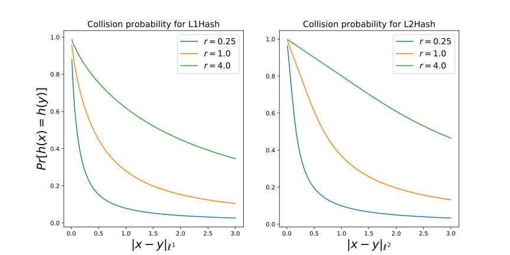

$\ell^p$ distance
This section is currently being developed. If you're interested in helping write this section, feel free to open a pull request; otherwise, please check back later.
Definition
The $\ell^p$ distance between two length-$n$ vectors $x$ and $y$ is defined as
$\ell^p$ distance is a valid norm for all $p \ge 1$, and is bounded between $0$ and $+\infty$. In the context of locality-sensitive hashing, we say that two points are similar if $\|x - y\|_{\ell^p}$ is small, and dissimilar if $\|x - y\|_{\ell^p}$ is large[1].
In the LSHFunctions module, you can calculate the $\ell^p$ distance between two points using the function ℓp. The functions ℓ1 and ℓ2 are also defined for $\ell^1$ and $\ell^2$ distance, respectively, since they're so commonly used:
julia> using LSHFunctions;
julia> x = [1, 2, 3]; y = [4, 5, 6];
julia> ℓ1(x,y) == ℓp(x,y,1) == abs(1-4) + abs(2-5) + abs(3-6)
true
julia> ℓ2(x,y) == ℓp(x,y,2) == √(abs(1-4)^2 + abs(2-5)^2 + abs(3-6)^2)
trueYou can also compute the $\ell^p$-norm of a vector ($\|x\|_{\ell^p}$, or equivalently $\|x - 0\|_{\ell^p}$) by calling ℓ1_norm, ℓ2_norm, or ℓp_norm:
julia> x = [1, 2, 3];
julia> ℓ1_norm(x) == ℓ1(x,zero(x))
true
julia> ℓ2_norm(x) == ℓ2(x,zero(x))
true
julia> ℓp_norm(x,2.2) == ℓp(x,zero(x),2.2)
trueLpHash
This module defines L1Hash and L2Hash to hash vectors on their $\ell^1$ and $\ell^2$ distances. It is based on Datar et al. (2004)[Datar04], who use the notion of a $p$-stable distribution to construct their hash function. Such distributions exist for all $p$ such that $0 < p \le 2$; the LSH family of Datar et al. (2004)[Datar04] is able to hash vectors on their $\ell^p$ distance for all $p$ in this range.
The LSHFunctions package currently only supports hashing $\ell^p$ distances of order $p = 1$ and $p = 2$ due to some additional complexity involved with sampling $p$-stable distributions of different orders. This problem has been filed under issue #18.
Using L1Hash and L2Hash
Currently only $p = 1$ and $p = 2$ are supported. You can construct hash functions for $\ell^1$ distance and $\ell^2$ distance using L1Hash and L2Hash:
julia> hashfn = L1Hash();
julia> n_hashes(hashfn)
1
julia> hashfn = L2Hash(10);
julia> n_hashes(hashfn)
10To hash a vector, simply call hashfn(x). Note that the hashes returned by an LpHash type such as L1Hash or L2Hash are signed integers:
julia> hashfn = L2Hash(128);
julia> hashtype(hashfn)
Int32
julia> x = rand(20);
julia> hashes = hashfn(x);
julia> typeof(hashes)
Array{Int32,1}L1Hash and L2Hash support a keyword parameter called scale. scale impacts the collision probability: if scale is large then hash collisions are more likely (even among distant points). If scale is small, then hash collisions are less likely (even among close points).
julia> x = rand(10); y = rand(10);
julia> hashfn_1 = L1Hash(128; scale=0.1); # Small value of scale
julia> n_collisions_1 = sum(hashfn_1(x) .== hashfn_1(y));
julia> hashfn_2 = L1Hash(128; scale=10.); # Large value of scale
julia> n_collisions_2 = sum(hashfn_2(x) .== hashfn_2(y));
julia> n_collisions_2 > n_collisions_1
trueGood values of scale will depend on your dataset. If your data points are very far apart then you will likely want to choose a large value of scale; if they're tightly packed together then a small value is generally better. You can use the collision_probability function to help you choose a good value of scale.
Collision probability
The probability that two vectors $x$ and $y$ collide under a hash function sampled from the LpHash family is
where
- $r$ is the reciprocal of the
scalefactor used byLpHash, i.e.r = 1/scale; - $c = \|x - y\|_{\ell^p}$; and
- $f_p$ is the p.d.f. of the absolute value of the $p$-stable distribution used to construct the hash.
The most important ideas to take away from this equation are that the collision probability $Pr[h(x) = h(y)]$ increases as scale increases (or, equivalently, as $r$ increases), and that it decreases as $\|x - y\|_{\ell^p}$ increases. The figure below visualizes the relationship between $\ell^p$ distance and collision probability for $p = 1$ (left) and $p = 2$ (right).

For further information about the collision probability, see Section 3.2 of the reference paper[Datar04].
Footnotes
- 1"small" and "large" are relative terms, of course.
LpHashhas a parameterscalethat influences the relationship between $\ell^p$ distance and collision probability, which helps us differentiate between what distances are small and which are large. - Datar04Datar, Mayur and Indyk, Piotr and Immorlica, Nicole and Mirrokni, Vahab. (2004). Locality-sensitive hashing scheme based on p-stable distributions. Proceedings of the Annual Symposium on Computational Geometry. 10.1145/997817.997857.